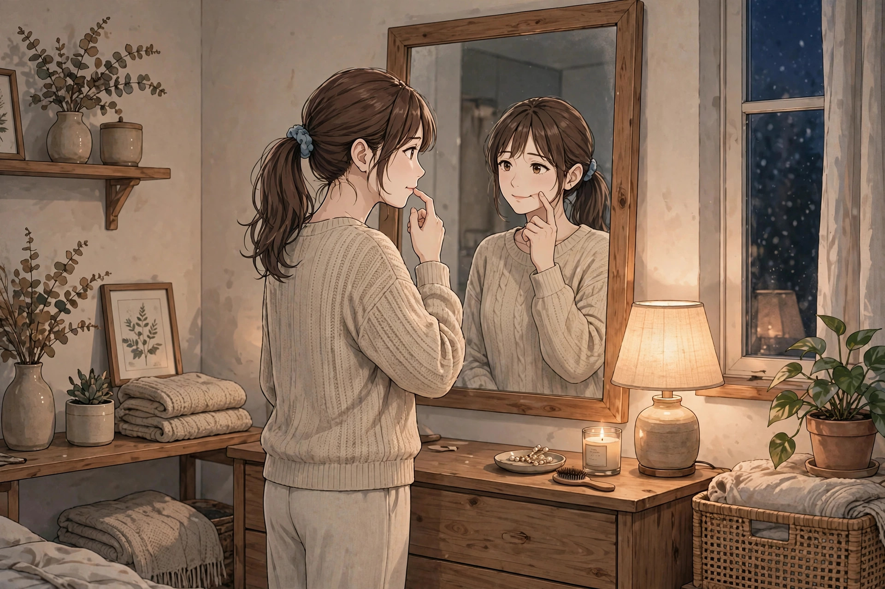
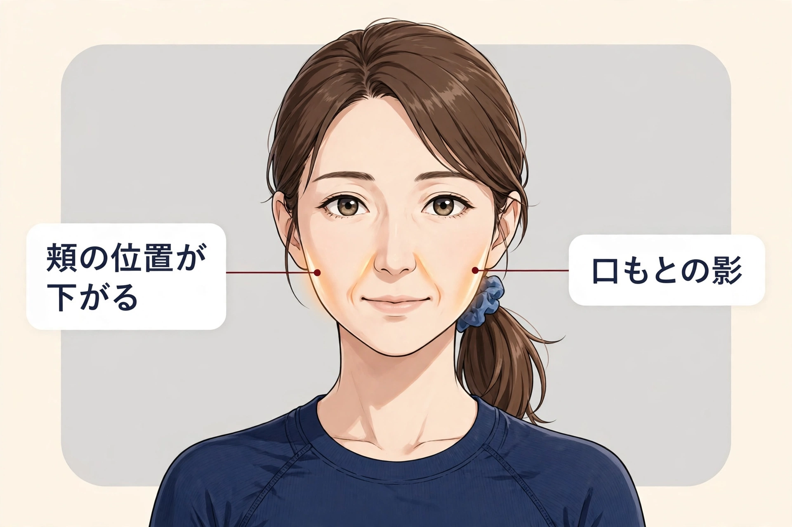

ほうれい線
美容整体ステラ・ポラリス東三国｜大阪市淀川区東三国・東三国駅徒歩5分・女性向け

頬の位置を整えて、口もとの影がやわらぐ印象へ
鼻の横から口もとへ続くほうれい線は、年齢を感じさせるサインとして気にする女性が多いお悩みです。ほうれい線は、線そのものが刻まれるというより、頬の位置が下がり、口もとの境目に影が落ちることで深く見えると言われています。背景には、頬を支える表情筋の衰え、噛みしめなどの表情のクセ、乾燥や巡りの影響が重なります。このページでは、ほうれい線が目立つ仕組みと、頬の位置と表情の使い方から見直して、口もとの影がやわらいで見える印象を目指す当サロンでのケア、ご自宅でできるセルフケアをご案内します。まずは下のチェックで、ご自身の状態を確かめてみてください。線の深さには左右差や個人差があり、気になり始める時期も人それぞれです。
ご予約はこちら（Coubic）こんなお悩みありませんか
- ほうれい線が、以前より深く長く見える
- 笑ったあとの線が、なかなか消えない気がする
- 頬の位置が下がって、口もとに影が落ちて見える
- 朝より夕方のほうが、線が目立つ気がする
- 片側だけ線が深く、左右差が気になる
- 気づくと歯を噛みしめていて、頬やあごが疲れる
- 乾燥する季節は、とくに線が気になる
当てはまる項目が多いほど、頬の支えの低下と表情のクセ、乾燥の影響が重なっている目安とされています。ほうれい線は頬の位置と深く関わるため、線そのものより頬全体の状態を見ることが大切です。次のセルフチェックで、頬の動きの傾向を確かめてみましょう。
簡単セルフチェック（頬の動きチェック）
鏡の前に座って、頬の上がり方を確かめる簡単な方法です。
- 鏡の前で、口角を斜め上に引き上げるように笑顔をつくります。
- 頬の高い位置がふっくら持ち上がるか、左右で上がり方に差がないかを確認します。
- 頬が持ち上がりにくい、片側の線だけが深く残る場合は、頬を支える筋肉の弱りや表情のクセが重なっている目安と言われています。
※これは診断ではありません。ご自身の状態の傾向を知る目安としてお使いください。
ほうれい線の原因と仕組み
頬の位置と口もとの影
ほうれい線は、頬のふくらみと口もとの境目にできる溝です。若い頃は頬の位置が高く、溝は浅く見えますが、頬を支える力が弱くなると頬全体が下がり、境目の影が深く落ちて線が目立つようになると言われています。図1のように、線をどうにかするより、頬の位置そのものを引き上げる視点が、ほうれい線ケアの土台になります。頬の位置が戻ると、口もとの影の出方も変わって見えます。

図1 頬の位置が下がって口もとの影が深く見える状態と、頬が引き上がった状態のイメージ。体の状態には個人差があります。施術では、この仕組みを踏まえてケアを組み立てます。
表情のクセと噛みしめ
歯を噛みしめるクセや、片側だけで噛む習慣は、頬やあごの筋肉の使い方に偏りを生みます。偏りが続くと、片側の線だけが深く見えたり、口もとの筋肉がこわばって頬が動きにくくなったりします。無意識のクセに気づいてゆるめることが、左右差の気になる方の見直しポイントになります。日中の無意識のクセに気づくことが、見直しの出発点になります。
乾燥と巡りの影響
肌の乾燥が進むと、表面の溝が目立ちやすくなります。また、顔の巡りが滞ってむくみが出ると、頬が重くなって影が落ちやすくなります。季節や体調で線の見え方が変わる方は、頬の位置に加えて、乾燥と巡りの影響も重なっている目安になります。首・肩のこわばりをゆるめることは、顔の巡りを助ける土台づくりにもつながります。首・肩から整えることも、顔の印象を考えるうえで大切です。
姿勢と顔の下がりの連動
頭が前に出た姿勢では、顔全体が下向きに引かれ、頬の下がりも進みやすくなります。ほうれい線が気になる方の多くに、首・肩のこわばりや猫背の傾向が見られると言われています。顔のケアと姿勢の土台づくりを組み合わせることが、頬の印象を保つうえで大切な視点です。顔と姿勢の両方から見直すことで、頬の印象は変わってきます。
セルフケアで足りる場合・サロンケアが向く場合
線の目立ち方が軽く、表情を動かしたり保湿をしたりするとやわらいで見える日が多い場合は、まずご自宅でのセルフケアを続けて様子を見る方法があります。一方で、頬の下がりそのものが進んできた気がする、左右差や噛みしめのクセが気になる、首・肩のこわばりも強いという場合は、サロンでのケアが向いている目安になります。サロンでは、頬まわりのケアと姿勢の土台づくりを組み合わせて、施術後に「口もとの影がやわらいで見える」「頬が軽い」と感じやすい状態を目指します。どちらが正解というものではなく、今の状態に合わせて選ぶことが大切です。
当サロンでのケア
当サロンのほうれい線ケアは、「頬の位置が上がり、口もとの影がやわらいで見える印象」を目指す組み立てです。まず頬の動きと頭の位置、噛みしめの様子を一緒に確認し、部位と目的に合わせて3つの手技を組み合わせます。
美容整体：頭の位置と背骨のラインを整え、顔を下に引く姿勢のクセをゆるめる土台をつくることを目的に。頬まわりのケアが届きやすい条件を整えます。
アロマオイルマッサージ：頬から口もと、首までをオイルでやさしくゆるめ、巡りが流れやすい状態を目指します。むくみが抜けて、頬が軽く感じられるケアです。
もみほぐし：噛みしめでこわばりやすい頬やあご、頭皮や首の付け根をほぐし、表情が動かしやすい状態を目指して進めます。
ケアを通して目指すのは、こんな変化です。
- 頬の位置が上がって見え、口もとの影がやわらぐ印象へ
- 表情が動かしやすくなり、笑顔が明るく見える状態へ
- 頬の左右のバランスが整い、線の左右差が気になりにくい状態へ
- 噛みしめのこわばりがゆるみ、頬やあごが軽く感じる状態へ
- 首・肩のこわばりがゆるみ、顔の巡りが助けられる土台へ
施術の仕上げには、ご自宅で続けやすい頬の体操や、噛みしめに気づくためのポイントもお伝えします。頬が上がって見える感覚を知ることが、日常の表情の使い方を見直すきっかけになります。強さは途中でも調整できますので、遠慮なくお声がけください。

施術の流れ
ご来店後、気になる部位やお悩み、ご希望の強さなどをうかがいます。完全個室のため、周りを気にせずお話しいただけます。
頬の動きや頭の位置、噛みしめの様子などを一緒に確認し、その日の状態に合わせた施術の進め方をご案内します。気になる点があれば、その場で一緒に確認します。
美容整体を中心に、ご希望に応じてアロマオイルマッサージ、もみほぐしを組み合わせて進めます。強さは途中でも調整できます。
施術後の状態を確認し、ご自宅で続けやすいセルフケアのポイントをお伝えします。次回の目安についても、ご希望があればご案内します。
料金
| コース | 通常価格 | キャンペーン価格（12/25まで） |
|---|---|---|
| 80分 | 8,000円 | 3,000円 |
| 100分 | 10,000円 | 4,000円 |
| 120分 | 12,000円 | 5,000円 |
クリスマスキャンペーンは12月25日まで、ご新規様もリピーターの方も対象です。施術内容は当日の状態とご希望に合わせて組み立てます。
ご自宅でできるセルフケア
- 頬ふくらまし体操：口の中に空気を含んで頬をふくらませ、左右にゆっくり移します。各5秒を3セット、頬の内側から支える体操です。
- 口角上げ体操：口角を斜め上に引き上げて5秒キープし、ゆるめます。5回を目安に、鏡で左右差を見ながら行ってください。
- 頬のマッサージ：指の腹で頬を小さな円を描くようにやさしくほぐします。強くこすらず、保湿をしたあとに行うのがおすすめです。
- 噛みしめリセット：気づいたときに上下の歯を離し、頬とあごの力を抜きます。舌を上あごにつける位置を意識すると、力を抜きやすくなります。
ご自宅でのケアに：セルフケア資料ライブラリ（無料）
このお悩みに合わせたセルフケアの考え方を、無料の資料ライブラリでご紹介しています。
セルフケア資料ライブラリを開く →
受診の目安
顔の片側だけが急に動かしにくい、口もとから飲み物がこぼれるといった変化がある場合や、顔の腫れや痛みが急に進む場合は、施術の前に医療機関への受診をおすすめします。気になる変化が続く場合も、まずは医療機関でご相談ください。ご不安な点があるときは、無理に施術を進めず、受診を優先してください。
よくある質問
Q. 初めてでも大丈夫ですか？
はい。当サロンは完全予約制・完全個室で、1日3組までのご案内です。最初にカウンセリングで頬の動きや噛みしめの様子をうかがい、無理のない内容から始めます。施術の前後で「頬が上がって見える」「口もとが軽い」といった感覚の違いを一緒に確認しながら進めますので、初めての方も安心してご利用いただけます。
Q. 顔の施術は痛いですか？
頬や口もとは繊細な部位のため、やさしい圧を基本に進めます。噛みしめでこわばった頬やあごは、状態に合わせて丁寧にほぐします。感じ方には個人差がありますので、施術中も遠慮なくお声がけください。施術中に力加減が気になるときは、その場でお声がけいただければすぐに調整します。
Q. コースはどう選べばいいですか？
80分・100分・120分のコースがあり、ケアしたい部位の広さやお時間のご都合に合わせて選べます。頬まわりに加えて、土台となる首・肩・背中までゆっくり整えたい方には、100分が選ばれることが多いコースです。迷われる場合は、ご予約の際にお気軽にご相談ください。
Q. 場所と予約方法を教えてください。
大阪市淀川区東三国、東三国駅から徒歩5分です。完全予約制のため、予約サイト（Coubic）またはLINE公式アカウントからご予約をお願いしています。
Q. 男性も受けられますか？
当サロンは女性向けのため、男性の方は、同じ東三国の男性専用整体院「北辰堂」をご案内しています。
施術者について
平賀建人（施術歴30年）
鍼灸師・登録販売者・アロマセラピスト・パーソナルトレーナーの資格を持ち、美容整体を中心に、アロマオイルマッサージ、もみほぐしを、その日の状態とご希望に合わせて組み合わせて施術します。このページの内容は、施術者の知識と経験をもとに作成しています。

料金・ご予約
ご新規様もリピーターの方も 12/25まで
80分 3,000円／100分 4,000円／120分 5,000円
通常価格は80分8,000円／100分10,000円／120分12,000円です。施術内容はご希望に合わせて組み立てます。
営業時間：月〜土 17:00〜23:00／日 10:00〜23:00（完全予約制）｜電話：080-2468-3086
大阪府大阪市淀川区東三国2丁目25番4号101（東三国駅徒歩5分）
専門解説で詳しく見る
仕組みから詳しく知りたい方は、専門解説シリーズのこちらの記事もあわせてご覧ください。